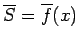

Volumen eines rotationssymmetrischen Körpers bei Drehung um die x-Achse (s. linke Abbildung):
(8.62a)
Volumen eines rotationssymmetrischen Körpers bei Drehung um die y-Achse (s. rechte Abbildung):
(8.62b)
Volumen eines Körpers, wenn der Flächeninhalt seines senkrecht zur x-Achse gelegten Querschnitts eine Funktion S =f(x) ist (s. Abbildung):
(8.63)
Cavalierisches Prinzip: Existiert im Intervall [a,b] eine zweite Querschnittsfunktion , die für jeden Abszissenwert x denselben Wert hat wie , so sind die Volumina V gemäß (8.63) und einander gleich.